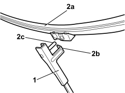

5050B28 WINDSCREEN WIPER BLADE/S - R+R
- Path
- Procedures > 50 AUXILIARY UNITS > 5050 SCREEN WASHERS AND HEADLAMP WASH/WIPE > 5050B WINDSCREEN WASH/WIPE > 5050B28 WINDSCREEN WIPER BLADE/S - R+R
- Kind
- repair procedure (removal / refitting; the operation number is the code)
- Applies to
- all engines; all production periods
- Interactive page
- https://sloeber94.github.io/elrnDB-aBrrSpdr/en/#/946002304
Applies to: all engines; all production periods
 Removing
Removing
 Refitting
Refitting1. Lift up the wiper arm.
2. Rotate the blade (2a) until it is released from the retainer (2b), then extract it from the pin (2c).

Applies to: all engines; all production periods
Refitting
Removing- Check that the blade is not damaged and that the rubber is intact.
- Fit the blade on the wiper arm pin, then rotate it attaching it to the retainer.
- Lower the wiper arm.
- Check that the windscreen wiper is working properly.